1. Kärnten. Barockschloß.
Im letzten Viertel des 18. Jh. von fürstlichem Bauherr als Sommerresidenz erbaut, nobles
Treppenhaus und außergewöhnlich hochwertig dekorierte Belletage mit Enfilade, Hauptnutzräume auf vier Etagen, eigene
Schloßkapelle, Nutzfläche mit Keller und Dachgeschoß ca. 2.800 qm, innen teilweise Modernisierungsbedarf je nach
Nutzungswunsch, zweiseitig öff. Straßen angrenzend, Schloßpark 1,9 ha, Jagdrevier 900 ha. zu verpachten, zugehörige
Luxus-Jagdresidenz siehe Nr. 2. Preis: Auf Anfrage. Info |
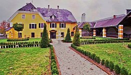
2. Kärnten. Luxus-Jagdresidenz in Nähe zu Barockschloß Nr. 1.
Renovierte Luxus-Jagdresidenz mit 38 möblierten Räumen und 1.250 qm Wohnfläche, Ausstattung mit Antiquitäten,
Grundstück 5.800 qm mit eigenem Biotop, Nebengebäude ca. 1.000 qm mit Waffenkammer, Gefrierzellen, Büro und Personalwohnung.
Preis: Auf Anfrage. Info |
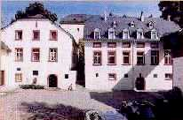
3. Rheinland-Pfalz. Klostermühle.
Preis: Auf Anfrage. Info |
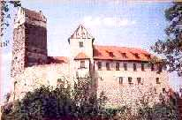
4. Baden-Württemberg. Ritterburg 12. Jh., teilrestauriert. Höhenlage über Ort. Grundstück
13.000 qm. Offene Vorburg, ummauerte Kernburg 2.500 qm mit staufischem Bergfried, frühgotischer Burgkapelle mit Fresken von 1250,
Torbau, Altes Schloß, Palas mit Brunnenstube, Wehrgang, 8 neue 2-Zimmer-Ferienwohnungen. Wohnfläche
gesamt ca. 1.300 qm. Verkauft. Info |
5. Sachsen-Anhalt. Schlossanlage mit Nebengebäuden und verwildertem Park um ehem.
Renaissance-Wasserschloss. Stark renovierungsbedürftig, viele Originalteile, interessante Lage nahe Autobahn
und Ballungszentrum. Verkauft |
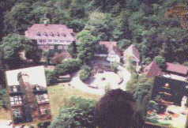
6. Niedersachsen. Schloßanlage,Grundstück 140.000 qm mit Schlosspark und Wald
(Naturschutz). Top-Zustand. Wohnfläche in 5 Etagen (Fahrstuhl) ca. 85 Räume ca. 2.800 qm, in Zehntscheune ca.
160 qm, in Marstall ca. 340 qm, Garagen ca. 350 qm. Aufteilung in ca. 20 Wohnungen möglich. Verkauft. |
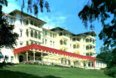
7. Im Kurbadeort, Harz, Niedersachsen. Traditions-Hotel mit 100 Zimmern, weiterer An-/Ausbau
möglich, 80 Senioren-Wohnungen denkbar. Grundstück ca. 50.000 qm in ruhiger Stadtlage. Preis: Auf Anfrage.
Info |
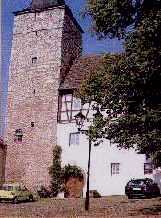
8. Thüringen. Burganteil. Verkauft. |
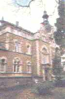 9. Rheinland-Pfalz. Gepflegtes Schloß
der Gründerzeit 1890/1978. Ortslage, Park mit Teich und Saunahaus. Grundstück ca. 28.000 qm, 8
Bauplätze abteilbar. Wohnfläche ca. 1.500 qm. Verkauft |
10. Rheinland-Pfalz am Rhein, Höhenschloss Ursprung 1590/1700, Umbau 1873. Rheinblick, 3 Geschosse, Dächer neu gedeckt 1988, Fenster u. Zentralheizung 1993, bis
vor wenigen Jahren private Wohnnutzung. Grundstück ca. 9000 qm, Wohnfläche ca. 1000 qm.
Preis: Verkauft. |
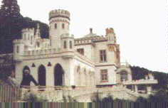
11. Rheinland. Schloß. Verkauft |
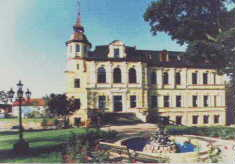
12. Sachsen-Anhalt. Luxussaniertes Freiguts-Herrenhaus/Schloß
v. 1885/95. Kleinstadt-Randlage. Park und Hof. Grundstück ca. 11.000 qm. Schloss ca. 1.500 qm Wohn-/Nutzfläche,
zus. ca. 3.000 qm Ausbauflächen. Preis: Verkauft |
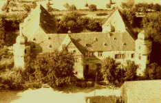
13. Unterfranken, Bayern. Wasserschloss
18. Jh., renovierungsbedürftig, voll erschlossen. Grundfläche ca. 800 qm, Grundstück 5350 qm, Schloßhof 540 qm, privat und
gewerblich nutzbar.
Preis: Auf Anfrage. Info
|
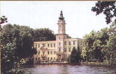
14. Brandenburg nahe Berlin. Schloß. Preis: Auf Anfrage. Info |
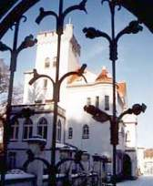
15. Brandenburg, bei Berlin. Große Schlossanlage mit umfriedetem Parkgelände und Teich. Grundfläche 16.000 qm, Hauptgebäude voll modernisiert, 1.600 qm Nutzfläche +
Nebengebäude (Ausbaureserve) 1.800 qm Nutzfläche. Preis: Auf Anfrage. Info |
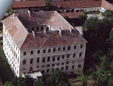
16. Niederösterreich, Weinbaugebiet, gute Verkehrsanschließung. Großzügige Vierflügel-Schloßanlage von berühmtem Barockarchitekten.
Renovierungsbedürftig, Zuschüsse mögl., Nutzfläche 4.000 qm, Festsaal ca. 300 qm, Marmorkapelle, reiche Stuckaturen und sonstiges Dekor,
Grundstück ca. 9.170 m2 inkl. Park, Nebengebäude evtl. zuerwerbbar, Preis: Auf Anfrage. Info |
|
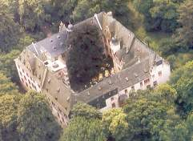
17. Hessen. Vierflügel-Schloß. Verkauft. |


 Konrad Fischers Architektur+Bau-Magazin Altbau und Denkmal Informationen Startseite/Impressum/Homepage
Konrad Fischers Architektur+Bau-Magazin Altbau und Denkmal Informationen Startseite/Impressum/Homepage Wärmedämmung?
Wärmedämmung?
 Feuchte/Salz?
Feuchte/Salz?
 Heizung?
Heizung?
 Fenster schwitzen?
Fenster schwitzen?
 Schimmelpilz wuchert?
Schimmelpilz wuchert? "Zum Fegfeuer" Der etwas andere Klosterladen
"Zum Fegfeuer" Der etwas andere Klosterladen